[Google API] 語音轉換、翻譯 API | Speech to Text Transcription with the Cloud Speech API
Status: Completed
▌目的
- 使用
curl發送API請求，協助轉換語音到文字 Creating a Speech API request and calling the API with curl - 面對各國不同語言情境，可以調整語音辨語言
▌1. 語音轉換文字 API | Cloud Speech-to-Text API
1. 建立可以授信的 API key
- 建立一個憑證Credentials，一般信認的三式有種API Key、OAuth、Service Account
- 本次使用的API Key
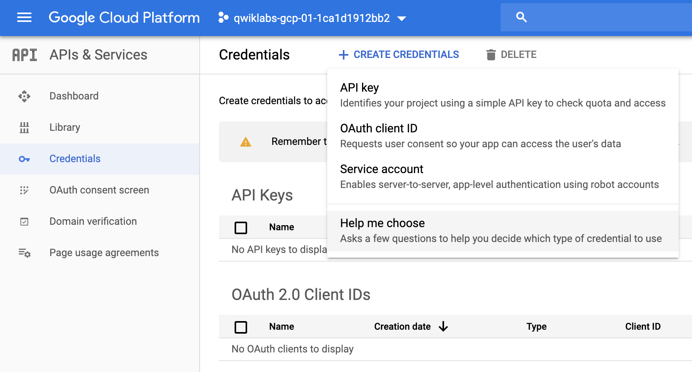
獲取Token Key
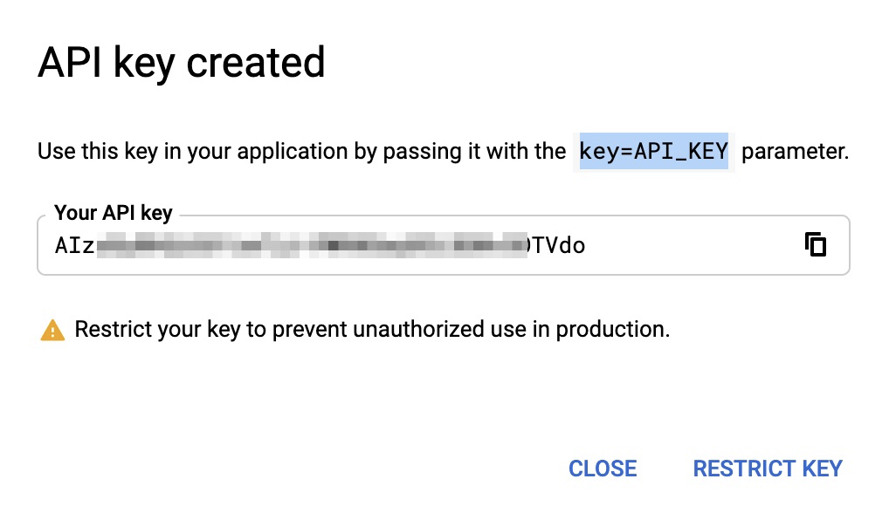
完整Token 資訊
限制
你的Token，可以只針對某些特定的application、HTTP、IP作使用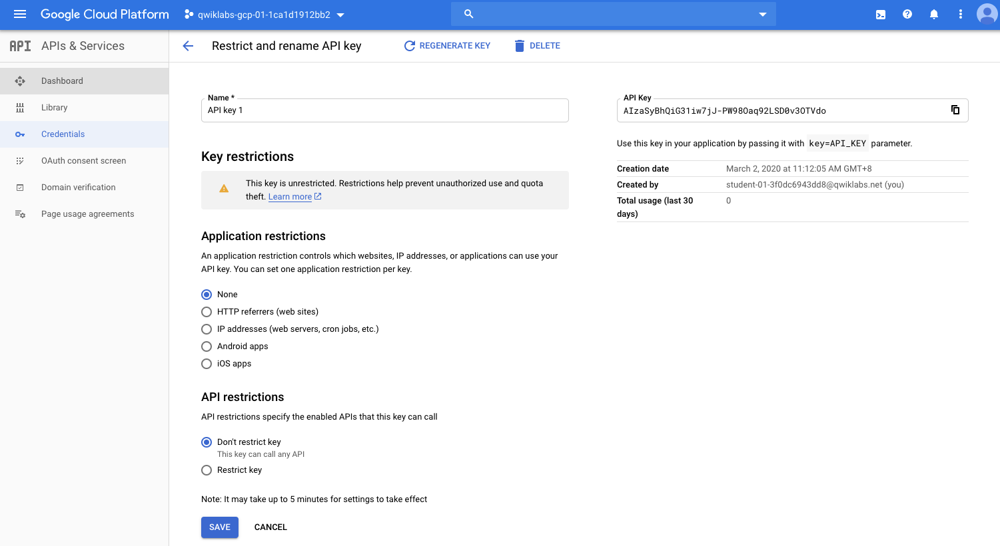
為了待會使用curl，需要做驗證
可以先將token設成一個變數，如此作法也較安全
不會因為明碼直接外洩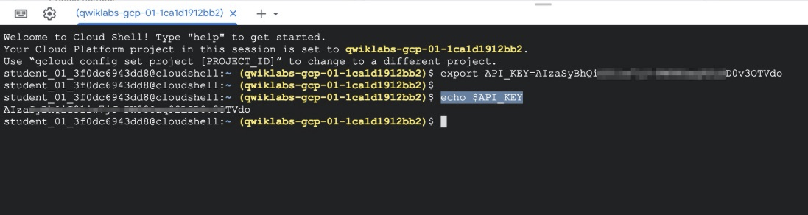
2. 準備一個語音檔Create your Speech API request
準備一個json裡面要告知API語音的資訊
encoding 也就是語音的格式：
flac是一種語音格式檔languageCode 語言：en-us(預式都是英文)
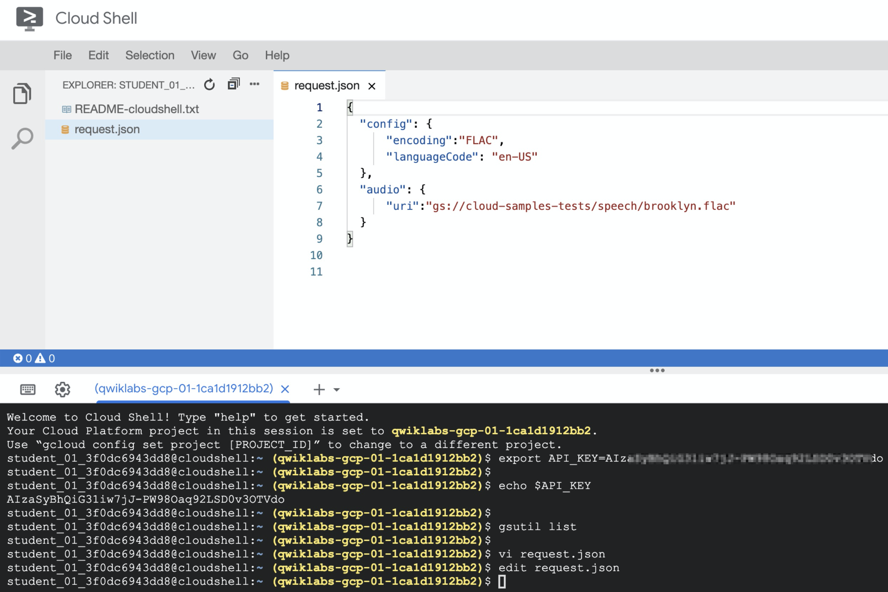
*補充encoding格式說明
https://cloud.google.com/speech-to-text/docs/reference/rest/v1/RecognitionConfig
3. cURL: 呼叫 Speech API
curl 參數說明
-s: –silent 安靜模式，不要顯示任何progress在console，即使有err也是-X POST: -X –request- 一般搭配 [GET|POST|PUT|DELETE|PATCH]
使用指定的 http method 來發出 http request
- 一般搭配 [GET|POST|PUT|DELETE|PATCH]
-H: 設定 request 裡所攜帶的 header—data-binary: 攜帶 HTTP POST Data@request.json: 用來夾檔?key=${API_KEY}: 用來餵toke n> result.json: 內容輸出到指定檔案curl -s -X POST -H “Content-Type: application/json” –data-binary @request.json
“https://speech.googleapis.com/v1/speech:recognize?ey=${API_KEY}" > result.json
4. 輸出結果
將flac語音轉換成text文字，也附上轉的confidence指數高達98%，代表它的翻譯準確程度
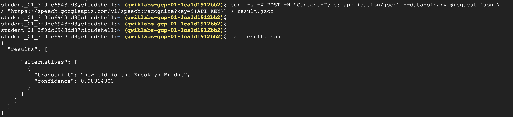
▌2. 翻譯 API | Cloud Translation API
1. Create an API Key
基本上跟上面的例子一樣，建一個token供API request使用
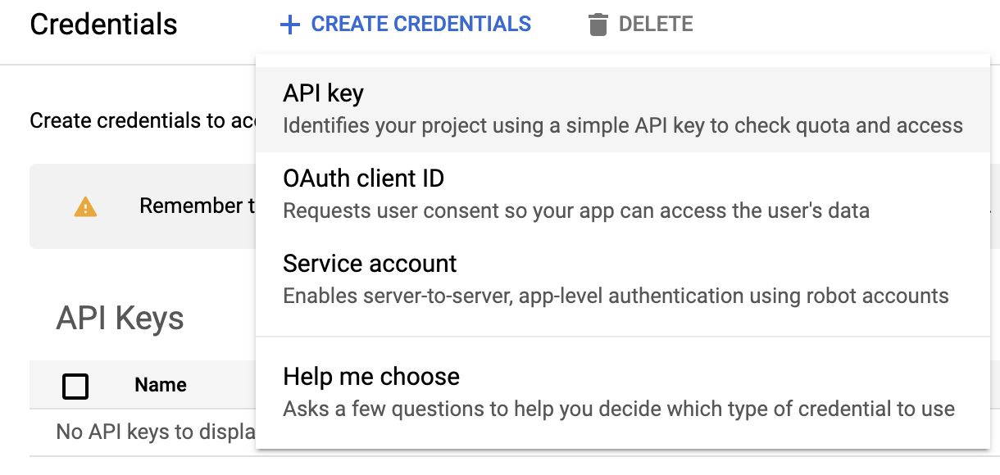
2. 開始翻譯 | Translate Text
範例一：把字串”My name is Steve” 英文翻譯成西班牙文
TEXT：存放英文字串這裡的空白為
#string
TEXT=”My name is Steve”api request
curl “https://translation.googleapis.com/language/translate/v2?target=es&key=${API_KEY}&q=${TEXT}"
Response
成功幫你翻譯為西文 → “Mi nombre es Steve”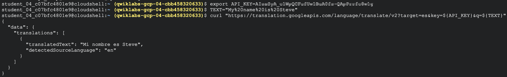
3. 多國語言翻譯
Translation API 的另一個功能可以協助偵測不同國語言
TEXT這邊設定二組字串有葡萄文跟日文&q= 可以吃多個變數，一起使用同一次request，也算是省錢吧!?
其實沒有，因為計價的方式來自$20 per million characters*TEXT_ONE=”Meu nome é Steven”
TEXT_TWO=”日本のグーグルのオフィスは、東京の六本木ヒルズにあります”
curl "https://translation.googleapis.com/language/translate/v2/detect?key=${API_KEY}&q=${TEXT_ONE}&q=${TEXT_TWO}"結果回傳"pt" 、 "ja" 代表這二組字串分別來葡萄牙語與日文
而語文的簡碼可以參考 ISO-639-1 所定義的各國簡碼
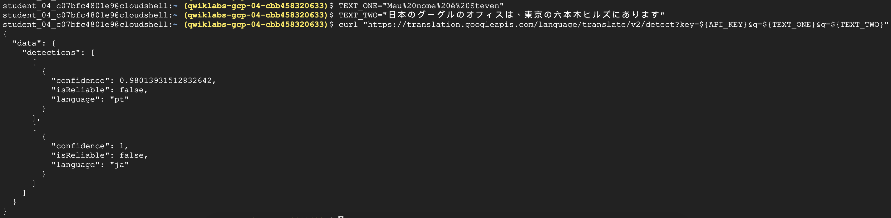
清楚版
{ "data": { "detections": [ [ { "confidence": 0.20671661198139191, "isReliable": false, "language": "pt" } ], [ { "confidence": 0.97750955820083618, "isReliable": false, "language": "ja" } ] ] } }
▌3. Google Cloud API with POSTMAN
上述的例子都是使用curl直接request，這邊換一個postman來發出request。這邊不同的於curl的方式，我們可以把token存在option中，且json request也可以寫在body當中
1. POSTMAN 驗證 | Authorization
Auth類型: API Key
作法一樣至Credentials得到一組token帶入API URI
https://speech.googleapis.com/v1/speech:recognize?key=AI...........o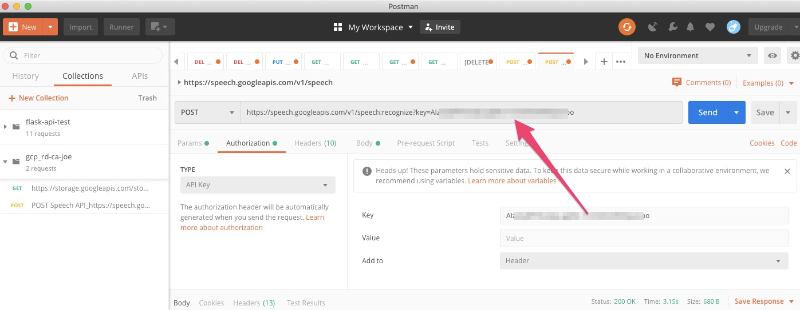
2. 請求 JSON
轉入的 json 可以直接寫在body內，原則上跟上面的例子一樣
告知檔案格式與flac的來源與格式{ "config": { "encoding":"FLAC", "languageCode": "en-US" }, "audio": { "uri":"gs://cloud-samples-tests/speech/brooklyn.flac" } }Body: JSON
寫入body，記得也要轉換JSON
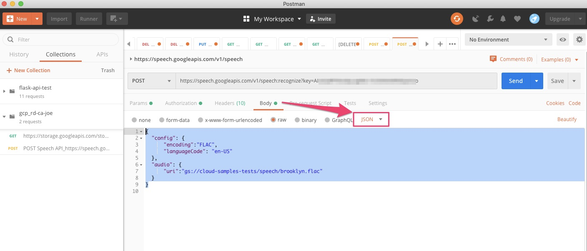
3. 執行
response結果
成功將語音轉換成文字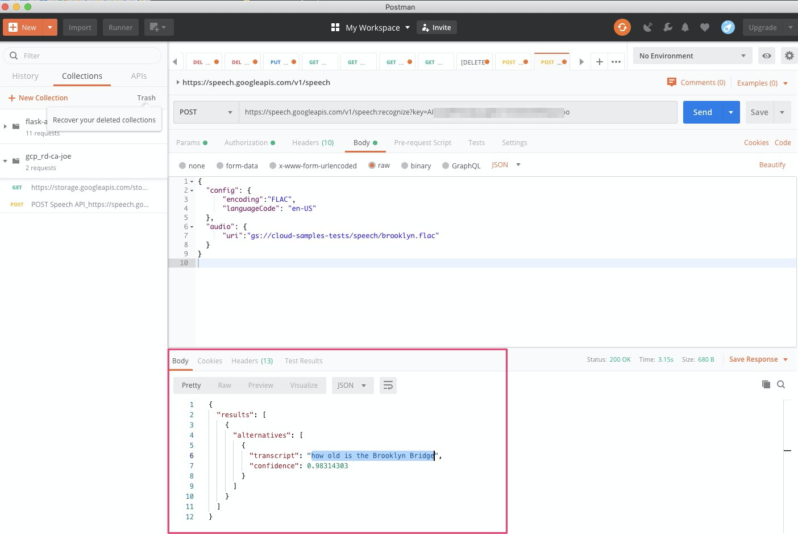
▌參考
CURL
https://blog.techbridge.cc/2019/02/01/linux-curl-command-tutorial/Speech to Text Transcription with the Cloud Speech API
翻譯 API | Translate Text with the Cloud Translation API
POSTMAN with Speech API